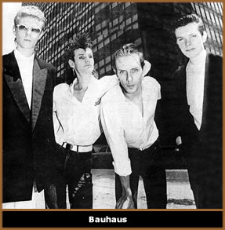
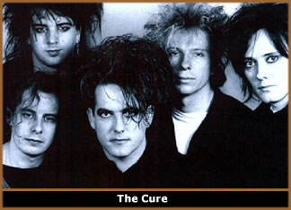

(Paul
Hodkinson,"GOTH - Identity, Style and Subculture")
(NT: segundo algumas linhas
teóricas...) (...) devido a natureza construída
e, logo maleável, das categorias sexuais, elas podem,
nas circunstâncias culturais e discursivas adequadas,
se tornar desconectadas do conjunto de performances estilísticas
e comportamentais repetidas que na verdade criam e reproduzem
as identidades de gêneros. (NT: masculino e feminino)
(...) Considera-se que a trangressão paródica
dos papéis dos gêneros tem o potencial de expor
a natureza construída e performática das noções
dominantes de masculino e feminino, que formatam esses segmentos.
(ex: Butler, 1990, 1991, 1993; Meyer 1994).
Embora sem a paródia,
ou sem fins políticos explícitos, o meio-ambiente
padrão característico da cena gótica afrouxou
consistentemente os elos entre as facetas estilísticas
dos gêneros e as categorias sexuais fixas de homem e mulher.
Mais especificamente, sem realmente considerar estas categorias
insignificantes, o gótico, desde o seu começo,
se caracterizou pela predominância, tanto nos homens quanto
nas mulheres, de tipos de estilos específicos que seriam
normalmente associados com feminilidade. Um dos meus entrevistados
por e-mail nos forneceu uma útil introdução
a esse tema:
J1
(mulher): Eu acredito que a natureza
da "cultura gótica" em si, conduz a "feminilidade"...
naquela ambigüidade sexual que é expressa pelas
roupas, maquiagem e música da cena.
Mais
importante, estilos específicos de maquiagem, que tem
sido lugar-comum desde os tempos do Bauhaus
(NT:1979-1983) e da Batcave (NT:1982), permaneceram
populares tanto para os homens quanto para as mulheres, durante
o final dos anos 90. Da mesma forma, góticos de ambos
os sexos sempre usaram quantidades consideráveis de jóias
de prata, especialmente brincos, argolas nasais, braceletes
e gargantilhas. A principal mudança que ocorreu durante
os anos 90 foi que os piercings, para ambos os sexos, também
se espalharam para os lábios, sobrancelhas, línguas
e umbigos e que as jóias eram mais para o colorido.
Além das jóias
e da maquiagem, numerosos exemplos de estilos de roupas relativamente
femininos, muitos dos quais também consistentes com a
ênfase no sombrio, tem sido importantes para ambos os
sexos na concepção da cena. Exemplos estabelecidos
há um tempo relativamente longo incluíam os itens
Vitorianos (...), juntamente à camisas com babados e
jaquetas de veludo para ambos os sexos.
Todavia, pelo final dos
anos 90, a ênfase de longa data na feminilidade se intensificou
tanto em popularidade quanto em radicalidade se comparada com
uma década antes. Enquanto o uso, por homens e mulheres,
de meias arrastão apertadas e tops de malha tenha sido
parte do estilo gótico desde a época do Specimen
(NT: aprox. 1982), ele se tornou um lugar comum das metade para
o final da década de 90. Ainda mais notavelmente, através
de um processo de transgressões individuais, o uso de
saias longas e curtas, tanto por góticos como por góticas,
se tornou comum.
Aconteceram mais diversificações
na forma pela qual a feminilidade se manifestava. Muitos dos
estilos de roupas dos anos 80, agora associados aos "góticos-tradicionais",
foram frequentemente combinados com novas influências,
ou rejeitados em favor destas. Em um movimento que remonta a
algumas das influências punks originais, a aspectos da
cena fetichista dos anos 90, e, indubitavelmente, a indústria
do sexo, se tornaram largamente populares. Era cada vez mais
fácil ver góticos de ambos os sexos vestindo calças,
camisas, saias, corsets, tops e coleiras de borracha ou PVC
preto e, às vezes, colorido.
Importantíssimo,
no contexto da cena gótica, do mais simples ao mais radical
exemplo destas vestimentas, foram sempre valorados mais em termos
de suas qualidades estéticas subculturais do que por
suas conotações sexuais. O valor simbólico
diferenciado do vestuário fetichista no meio-ambiente
subcultural e no não-subcultural era demonstrado pelo
fato de, enquanto completamente confortáveis vestindo
tais roupas em um clube gótico, muitas góticas
ficavam nervosas a respeito das possíveis reações
a elas em um meio que elas consideravam mais comercial (NT:mainstream):
R1
(mulher): Digamos que eu fosse a um
clube da moda vestindo o que eu vesti no último show
do "Dust to Dust" (banda gótica), que consistia
de várias camadas de arrastão rasgadas, botas
plataforma, calças "quentes" e um corset bem
decotado, eu teria sido agarrada por todos os lados e teria
provavelmente terminado a noite estuprada ou algo assim.
Voltando ao tema de forma
mais genérica, a feminilidade não se manifestava
apenas em fatores controláveis como roupas, maquiagem
e acessórios, mas também na aparência física
dos corpos e rostos dos indivíduos. Assim, desde os tempos
do Bauhaus, os homens mais venerados e desejados da
cena gótica, em termos de aparência, tendiam a
ter faces e corpos esguios, e muito pouco pelo corporal. O entrevistado
a seguir explicou que, para ele, o apelo chave da cena gótica
era que, neste clima cultural diferenciado, o seu corpo ligeiramente
efeminado se tornara uma característica positiva, em
vez de negativa:
G4
(homem): É que basicamente eu posso me
sentir confortável sendo uma cara magricela e frágil,
e que, tipo assim, é um pouco emotivo às vezes.
Na verdade, isso é quase um bônus.
Corpos ou faces esguios,
eram, como um todo, também valorizadas para as mulheres,
coerentemente com a moda mais dominante, embora a habilidade
de expor um colo amplo com a ajuda de um corpete ou outro top
decotado, frequentemente mais que compensava para aquelas de
proporções gerais maiores.
A
referência do entrevistado G4 a ser capaz de ser "um
pouco emotivo às vezes", em adição
à sua aparência esguia, indica claramente que a
demonstração pelos homens de certas características
comportamentais e atitudes associadas com a feminilidade era
também mais comum na cena gótica do que na maioria
dos elementos da sociedade fora dela. Isso certamente se reflete
fortemente em alguns exemplos da música gótica,
nos quais os estereótipos de temas emocionais, auto-indulgentes
e angustiados, todos os quais tendem a ser mais associados com
a feminilidade do que com a masculinidade, são uma generalização,
mas não de toda imprecisa.
Embora, não um tema
na cena positive-punk do começo dos anos 80, ou, sem
dúvida, de parte da música industrial tocada nos
clubes góticos ao longo dos anos 90, parte da música
gótica mais popular frequentemente exibia tais características.
Notavelmente, as guitarras atmosféricas, teclados, tempos
reduzidos, vocais lamuriosos e as letras angustiadas que caracterizaram
muito da música do The
Cure, serve como um exemplo consistente, como também
certas baladas do The Mission, Fields of Nephilim,
All About Eve, entre outros.
Do meio para o final dos
anos 90, embora a influência da música industrial
tenha resultado na incorporação na música
gótica de sons mais dançantes e às vezes
com guitarras mais pesadas, os temas líricos e o uso
de tonalidades atmosféricas e emocionais significaram
que a música reteve elementos de auto-indulgência
emocional.
A manifestação
desta ênfase em ser emocional no comportamento dos homens
góticos, de tempos em tempos, foi relacionada por uma
participante ao que ela percebeu como uma grande tendência
deles de permitir contato tátil entre homens:
D6
(mulher): Eles (homens góticos)
podem realmente se aproximar de outro homem. Eles não
se sentiriam envergonhados de abraçar outro homem ou
chorar no seu ombro ou alguma coisa desse tipo que, se eles
fossem mais machões então diriam "ei, sua
bixona, você não pode segurar minha mão",
você sabe.
A ênfase, tanto para
homens como para mulheres, em uma aparência feminina,
foi também relacionada com uma aceitação
geral e, às vezes, até veneração
da ambigüidade sexual. Enquanto a maioria dos góticos
se comportava de acordo com as normas heterossexuais perante
a sociedade como um todo, havia muito pouca, senão nenhuma,
desaprovação ou surpresa, nos clubes góticos,
quando eram vistos pessoas do mesmo sexo andando de mãos
dadas, se agarrando ou se beijando. Além disso, muitos
homens e mulheres góticos, durante conversação
informal e em ocasionais discussões em fóruns
on-line durante minha pesquisa, entusiasticamente indicaram
que sentiam atração por góticos de ambos
os sexos. Às vezes existia a nítida impressão
de que as sexualidades não-heterossexuais, enquanto certamente
não sejam a regra, eram uma transgressão a ser
admirada.
Tal incomumente alta incidência
e aceitação, fora da cena gay ou da cena fetichista,
de comportamento homoerótico, pode estar relacionado
a diversos fatores, especialmente a forma pela qual a ambigüidade
sexual e de gênero tendem a ser associadas pela mídia,
a influência direta de músicos relacionados a cena
aparentemente bissexuais, notavelmente o ancestral glam-rock
do gótico, David Bowie, a experimentação
e transgressão em geral, sexual ou de outros tipos, associadas
ao tão renomado clube Batcave inicial dos anos
80 e o degrau de sobreposição entre o gótico
e o fetichismo.
Todavia, parece altamente
provável que este processo também envolveu uma
reação um pouco mais gradual e enraizada, da parte
de alguns góticos(as), a estar regularmente em um meio-ambiente
no qual a divisão entre homens e mulheres foi substancialmente
diluída pelo estilo subcultural. (...) Assim, uma entrevistada
pôde me explicar que ela considerava a ambigüidade
de gênero e a ambigüidade sexual completamente entrelaçadas:
A9
(mulher): ...da forma que nos vestimos...
sempre existiu aquele elemento de bisse-xualidade, quero dizer:
você vê homens de aparência bastante feminina,
não?
Ela continuou desenvolvendo
seu ponto de vista relacionado a sua própria sexualidade,
explicando que ela era atraída por formas específicas
de feminilidade, as quais, no contexto específico da
cena gótica, ela poderia encontrar tanto em homens quanto
em mulheres. Embora virtualmente impossível de provar,
parece plausível que uma mulher atraída por um
tipo específico de aparência gótica feminina
nos homens possa se direcionar na busca de características
igualmente atraentes quando elas são exibidas por uma
mulher. Da mesma forma, do ponto de vista de um homem gótico,
a distância entre ser atraído por uma forma subcultural
de feminilidade em uma mulher e ser atraído por características
semelhantes em homens góticos parece mais superável
em um meio ambiente tão andrógino.
Tendo se tornado estabelecida,
as expressões livres de bissexualidade em clubes góticos
provavelmente se reproduziram mais diretamente, da mesma forma
que aquelas outras modas comportamentais e estilísticas.
Isto não quer dizer necessariamente que desejos sexuais
possam ser conscientemente manipulados, mas, simplesmente, como
Came colocou: "a visibilidade cria oportunidade
para outros" (Came,1996:27). Se foi o meio ambiente
subcultural que causou uma mudança na sexualidade de
participantes anteriormente heteros, ou se ele simplesmente
possibilitou a indivíduos já pré-dispostos
a atração ao mesmo sexo a consumá-la na
prática, parece uma questão que demandaria bem
mais espaço do que temos aqui. De qualquer forma, ambas
as interpretações servem para enfatizar o ponto
chave geral que, no que é relacionado a questão
de gênero e, por extensão, a sexualidade, a cena
gótica desenvolveu um meio ambiente estilístico
e normativo altamente diferenciado.